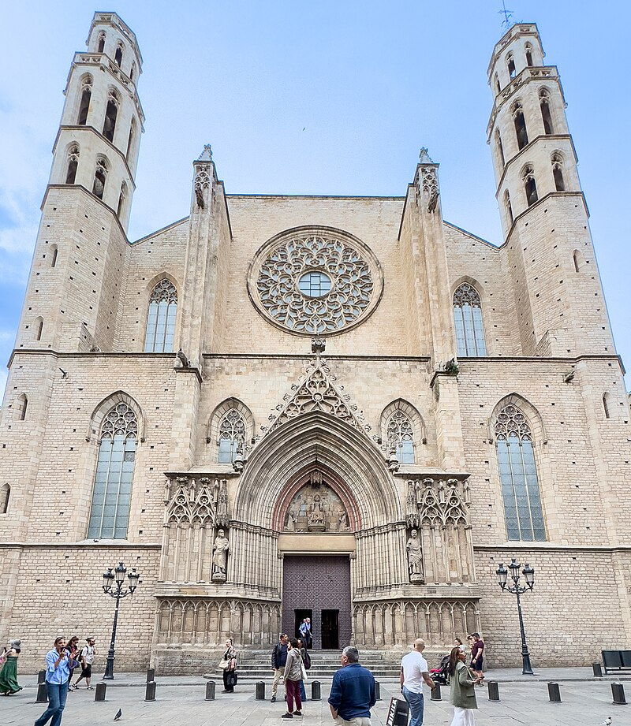

Kościół Santa Maria del mar
Kościół Santa María del Mar jest bazyliką mniejszą położoną w Barcelonie w Katalonii w Hiszpanii . Został zbudowany w latach 1329-1383. Od 3 czerwca 1931 roku uznawany jest za zabytek kultury .

poprzednie zdjęcie